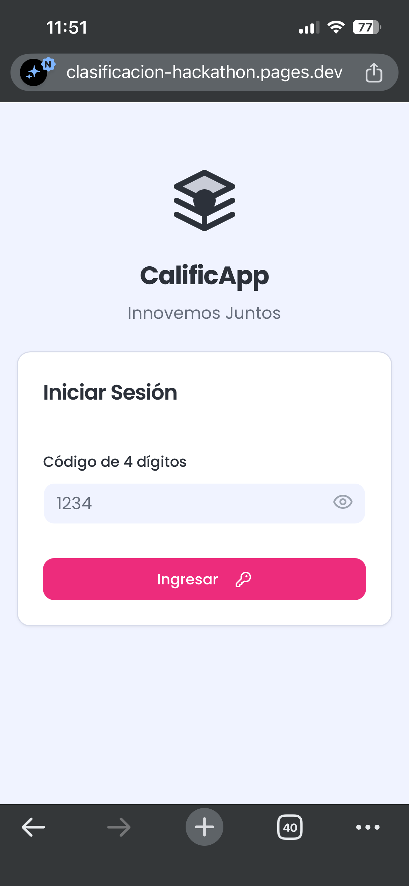
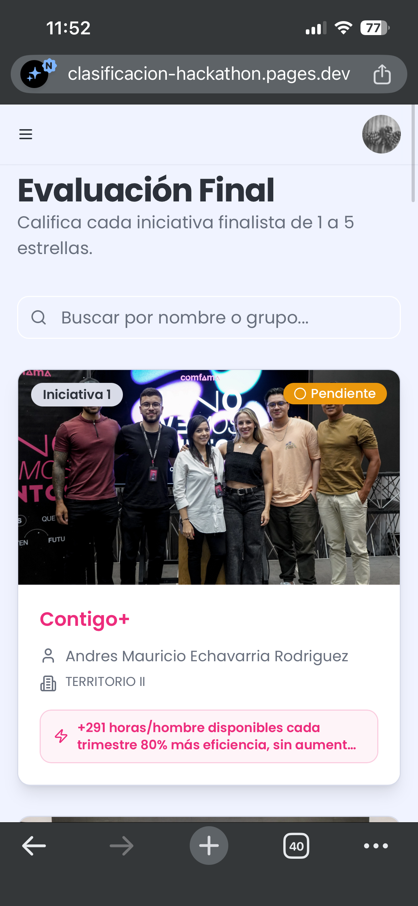
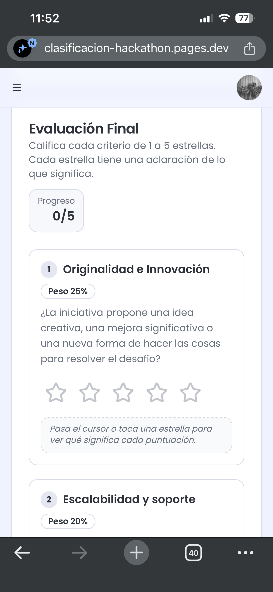
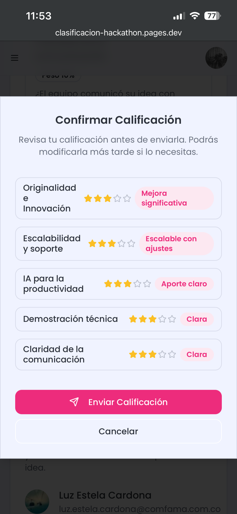

Como jurado de la final, tu tarea es calificar las 10 iniciativas finalistas respondiendo 5 preguntas con estrellas de 1 a 5. Con esos puntajes se eligen las 3 iniciativas ganadoras. Esta guía te explica cómo entrar, qué vas a ver y cómo se calcula el resultado.
Abre https://clasificacion-hackathon.pages.dev desde tu celular o computador y escribe tu código de acceso de 4 dígitos (te lo entrega la organización). No necesitas usuario ni contraseña.
No todas las preguntas valen lo mismo: cada una tiene un peso en el resultado final.
| Pregunta | Qué evalúa | Peso |
|---|---|---|
| Originalidad e Innovación | ¿La iniciativa propone una idea creativa, una mejora significativa o una nueva forma de hacer las cosas para resolver el desafío? | 25% |
| Escalabilidad y soporte | ¿Qué tan fácil sería llevar esta solución a más personas, áreas o territorios, y darle el soporte necesario para que siga funcionando? | 20% |
| IA para la productividad | ¿La iniciativa usa la inteligencia artificial para mejorar la productividad: ahorrar tiempo, reducir tareas repetitivas, optimizar recursos o mejorar la calidad del trabajo? | 25% |
| Demostración técnica | ¿Qué tan funcional fue la demostración técnica presentada por el equipo? (De ★1 «sin prototipo funcional» a ★5 «totalmente funcional, en vivo».) | 20% |
| Claridad de la comunicación | ¿El equipo comunicó su idea con claridad: se entendió el problema, la solución y el valor que aporta? | 10% |

1. Ingresa con tu código de 4 dígitos.

2. Las finalistas numeradas, con su estado Pendiente o Evaluada.

3. Cada pregunta muestra su peso y se responde con estrellas.

4. Revisa el resumen y confirma. Podrás modificarla más tarde.